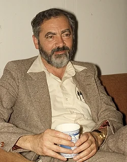

From today's featured article

The Gunpowder Plot of 1605 was a failed assassination attempt against King James I of England and VI of Scotland by a group of provincial English Catholics led by Robert Catesby. The plan was to blow up the House of Lords during the State Opening of Parliament on 5 November, as the prelude to a revolt in the Midlands during which James's nine-year-old daughter, Princess Elizabeth, was to be installed as the Catholic head of state. Catesby may have embarked on the scheme after hopes of securing greater religious tolerance under King James had faded, leaving many English Catholics disappointed. His fellow plotters (pictured) were John and Christopher Wright, Robert and Thomas Wintour, Thomas Percy, Guy Fawkes, Robert Keyes, Thomas Bates, John Grant, Sir Ambrose Rookwood, Sir Everard Digby and Francis Tresham. Fawkes was given charge of the explosives. (This article is part of a featured topic: Gunpowder Plot.)
In the news
_(cropped).jpg)
- UPS Airlines Flight 2976 crashes after takeoff from Louisville, Kentucky, killing at least 9 people.
- Typhoon Kalmaegi leaves at least 93 people dead in the Philippines.
- In baseball, the Los Angeles Dodgers defeat the Toronto Blue Jays to win the World Series (MVP Yoshinobu Yamamoto pictured).
- At least 10 people are confirmed killed in election protests as the incumbent president of Tanzania, Samia Suluhu Hassan, is declared winner of the general election.
- In baseball, the Fukuoka SoftBank Hawks defeat the Hanshin Tigers to win the Japan Series.
Did you know ...

- ... that legend has it that Ko Myo Shin (statue pictured) became a spirit after allowing his head to be cut off?
- ... that the children's music singer Damaris Gelabert was the first Catalan music channel on YouTube to win a Silver Button?
- ... that a 2025 ecclesiastical trial had three successive prosecutors during its first three weeks?
- ... that Argentine admiral Enrique Molina Pico commanded the destroyer ARA Hércules during the Falklands War, and later coordinated the operations of Argentine forces in the Gulf War?
- ... that the film The Taverna was shot at a Greek restaurant in Melbourne over sixteen days?
- ... that Kelley Dolphus Stroud hitchhiked from Colorado Springs to Boston in twelve days to compete in the 1928 United States Olympic trials?
- ... that Edward D. Maryon's art was heavily influenced by his time stationed at the Presidio of Monterey after being drafted into the army?
- ... that condensed-matter physicist Zachary Fisk conducted chemistry experiments in secret because his father disapproved of his interest?
- ... that Max Verstappen won a record 19 Grands Prix in a season on his way to the 2023 Formula One World Drivers' Championship?
On this day
November 5: Guy Fawkes Night in Great Britain and some Commonwealth countries; Guru Nanak Gurpurab (Sikhism, 2025)

- 1556 – At the Second Battle of Panipat, forces of the Mughal emperor Akbar captured Hemu, the Hindu emperor of north India.
- 1854 – Crimean War: Despite being severely outnumbered, and fighting in heavy foggy conditions, the allied armies of the United Kingdom and France defeated the Russians in present-day Inkerman, Ukraine.
- 1916 – An armed confrontation in Everett, Washington, between local authorities and members of the Industrial Workers of the World resulted in seven deaths.
- 1944 – World War II: Allied forces began a military campaign on Japanese-occupied Singapore.
- 1990 – Israeli ultra-nationalist rabbi Meir Kahane (pictured) was assassinated in a New York City hotel by an Arab gunman.